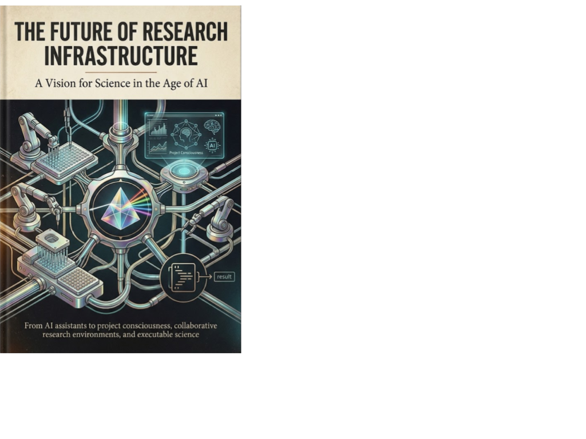

Executable Science · Axiologic Research Editions
The Future of Research Infrastructure
A Vision for Science in the Age of AI
AI will not transform science merely by writing faster. It will transform it when projects can preserve their evidence, memory, disagreements and human judgment as they evolve.
Science is not a chat session
Research already depends on an invisible infrastructure: notebooks, papers, datasets, repositories, meetings, instruments, ethics documents and the remembered judgment of collaborators. It works because people reconstruct the context that lives between them. As AI begins to search, write, code, analyse and critique in parallel, that reconstruction becomes the central problem. Fast output can make a project harder to understand unless its history, evidence and unresolved questions remain connected.
This book proposes that the true object of future research software is not a conversation, but a living project state. A scientific environment should know what a project is trying to establish, which evidence has been accepted, which interpretations remain disputed, what an agent may change, what a human approved and why a once-promising path was abandoned. The goal is not an AI that sounds like a scientist. It is an environment in which scientific work can remain inspectable as it becomes more machine-assisted.
From assistants to project consciousness
What makes a research project coherent? Persistent, versioned state that can hold questions, claims, evidence, experiments, decisions, permissions and uncertainty, not just files and chat histories.
What should agents be allowed to do? The book treats agents as specialised scientific roles with bounded authority. Models are valuable for language, analogy and hypothesis generation; deterministic systems are stronger at identity, provenance, constraints, permissions and reproducible tests.
Can governance support discovery rather than obstruct it? It reimagines review, novelty assessment, compliance, privacy and ethics as continuous research context: explicit objects that guide action at runtime instead of paperwork reconstructed after the fact.
The important question is not whether an AI can produce a research artefact, but whether a project can still show how that artefact acquired authority.
An instrument that can fail visibly
The vision is deliberately not a product catalogue or a promise that the necessary system already exists. It maps a research programme: collaborative rooms, agent populations, evidence systems, policy-aware workflows, neuro-symbolic foundations and eventually automated laboratories. Each component must expose its limits. An incomplete literature search should remain incomplete; a mistranslated rule should not become a verified conclusion; a disagreement among validators should survive as part of the project rather than be smoothed away.
Read it if you work on AI for science, research software, data infrastructure or institutional governance. It is an invitation to build the missing instrument around intelligence: one that lets scientific communities accelerate without surrendering continuity, responsibility or the capacity to correct themselves.